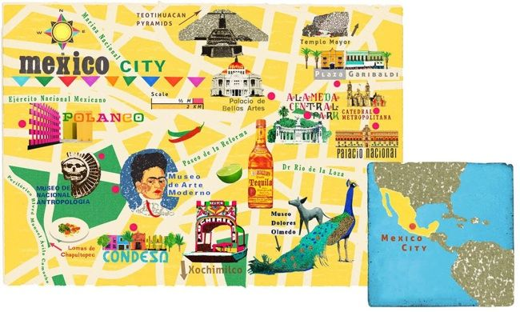

Mexico City
Travel Guide
Overview
Mexico City, or the City of Mexico (Cuidad de Mexico), is the capital of Mexico and the most populous city in North America. It is one of the most important cultural and financial centers in the Americas. Its historic center, better known as Zocalo, is declared World Heritage by UNESCO and is the heart of a living culture that exudes everything accumulated since the founding of Tenochtitlan. Visit its neighborhoods flooded with art nouveau and art deco, enjoy its cuisine and lose yourself in the streets of the city with the most museums in the world.
Location
Located in the Valley of Mexico (Valle de México), a large valley in the high plateaus in the center of Mexico, at an altitude of 2,240 meters (7,350 ft). The city has 16 boroughs.
Population
The 2009 population for the city proper was approximately 8.84 million people, with a land area of 1,485 square kilometers (573 sq mi).According to the most recent definition agreed upon by the federal and state governments, the population of Greater Mexico City is 21.3 million, which makes it the largest metropolitan area of the Western Hemisphere, the eleventh-largest agglomeration (2017), and the largest Spanish-speaking city in the world.
History
Mexico’s capital is both the oldest capital city in the Americas and one of two founded by Native Americans, the other being Quito, Ecuador. The city was originally built on an island of Lake Texcoco by the Aztecs in 1325 as Tenochtitlan, which was almost completely destroyed in the 1521 siege of Tenochtitlan and subsequently redesigned and rebuilt in accordance with the Spanish urban standards. In 1524, the municipality of Mexico City was established, known as México Tenochtitlán, and as of 1585, it was officially known as Ciudad de México (Mexico City). Mexico City was the political, administrative, and financial center of a major part of the Spanish colonial empire. After independence from Spain was achieved, the federal district was created in 1824.